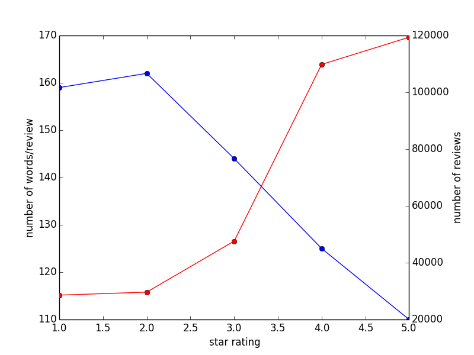
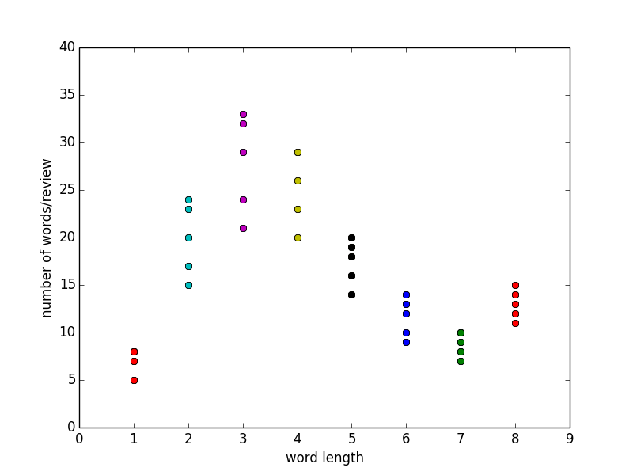
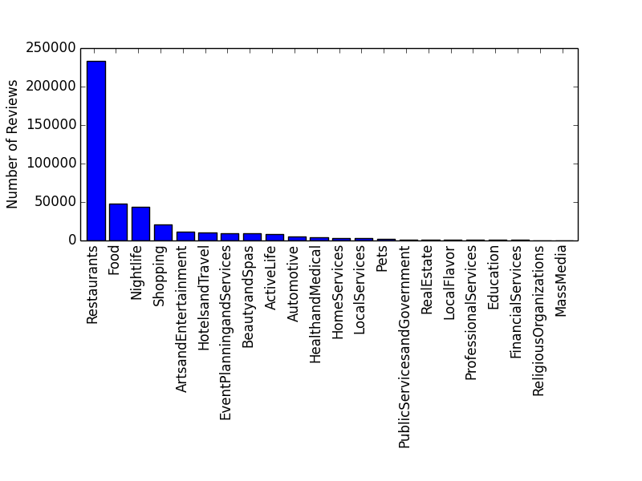
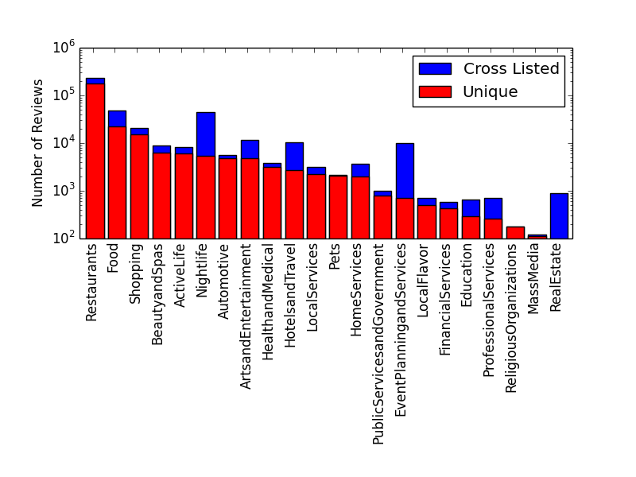

|
Goal: The goal of this project is to build a recommendation system based on the textual content of Yelp business reviews in order to keep the user engaged with the website for a longer period of time. Data/Code: Yelp released an excellent set of business, user, and review data for the Phoenix, AZ area. The code for the project is on GitHub. Motivation: I am very interested in the interaction between consumers and businesses and how this relates to the e-commerce economy of the 21st century. Written customer reviews provide essential feedback for a wide range of products and services. I wanted to explore NLP techniques and be able to predict the sentiment and category of the review from processing the textual information. I believe accurately processing unstructured data to extract business insight will be an ever more powerful tool in the economy of the 21st century. Classifier: I inserted the JSON data into a SQLite database creating a schema that is optimal for category classification. I built a classification system using the Python scikit-learn and NLTK libraries. The features in my classifier were stemmed unigram and bigram TFIDF values. I used an ensemble classifier combining the output of Multinomial Naive Bayes, Logistic Regression, and Random Forest classifiers, that performed better than the classifiers individually. To train the sentiment classifier, I used the 5 star reviews as the 'Positive' class and 1 star review for the 'Negative' class. To cross validate the performance of the model I used 5 classes assigning reviews for 5 star as 'Positive', 4 star as 'Positive', 3 star as 'Negative', 2 star as 'Negative', and 1 star as 'Negative'. The cross validation accuracy scores are listed below. As expected the classifier performs quite well for 1 and 5 star classes, reasonably for 2 and 4 star classes, and poorly for the 3 star class.
To train the category classifier, I picked the top 5 categories of businesses: Restaurants, Food, Shopping, BeautyandSpas, and ActiveLife. The cross validation precision and recall scores for the ensemble classifier are shown below. The classifier performed quite well with precision and recall scores in 90% range. Misclassified reviews tended to be shorter and use more common words.
When a user is writing a review, the recommendation system would automatically classify the sentiment and category of the review. Below is an example of a typical review and the probability scores for the sentiment and category classifiers. Recommender: Part of the dataset includes a tip history (short pieces of advice that are not full reviews) a user has left for specific businesses. I used the cosine similarity between reviews using the category TFIDF features to recommend businesses where the user left a tip but did not leave a full review, in order to encourage the user to write a full review. The idea would be to keep the user engaged on the website as long as posible to be able to serve more advertising impressions to them. Example User 1:
Example User 2:
Future work: In the future, I would like to incorparate other features to my model including geopositioning data, other business attributes, user check-in history, among others. This Yelp data set is very rich and can be explored in a number of ways to produce business insight. Below are some interesting characteristics of the data:Figure 1. The number of words per review (after stemming using NLTK) as a function of the star rating. We can see negative reviews tend to be longer and go into detail into the shortcomings of the business. However, the overall quantity of positive reviews is much higher, since people are much more willing to offer praise for a business they like. Figure 3. Same as Figure 2. We can see 3-letter words are the most common. The sets of 5 are the different star ratings. Figure 4. For the category classifier, it is important to understand the amount of data in each class. Below is a list of the 22 primary categories in Yelp. As expected from the historical roots of Yelp, the reviews are dominated by the Restaurants category. Figure 5. In order to improve classifier performance with TFIDF features, I found using reviews for businesses that had unique primary categories very useful. Below is a log plot of the cross listed and unique categories.  | ||||||||||||||||||||||||||||||||||||||||||||||||||||||||||||||||||||||||||||||||||||||||||||||||||||||||||||||||||||||||||||||||||||||